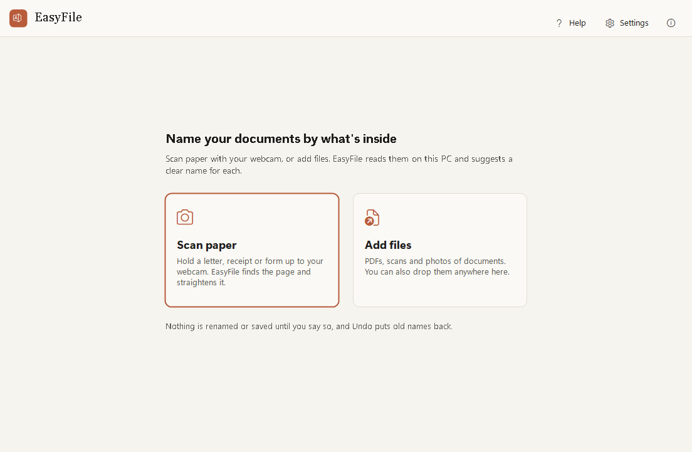
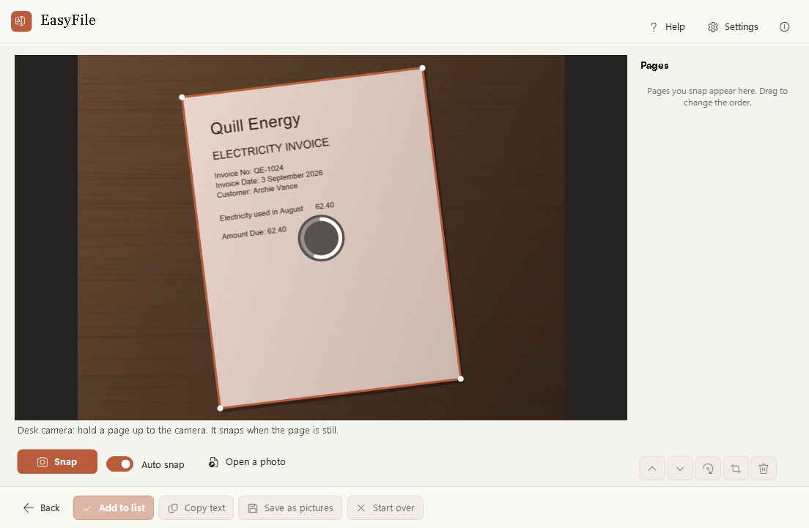
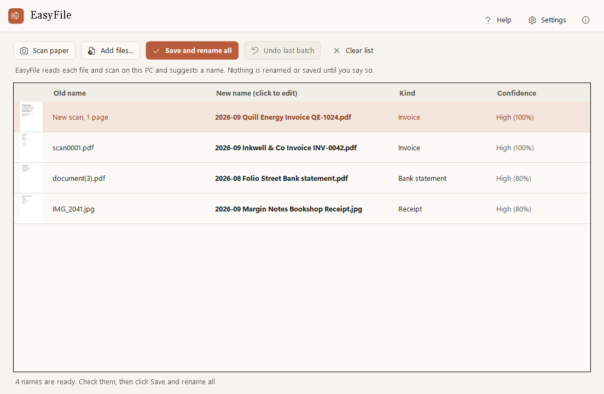

Paper in, tidy files out.
Hold a page up to your webcam and it is found, straightened and named for you. Drop in PDFs and photos and they get names that say what they are, like 2026-09 Quill Energy Invoice QE-1024.pdf.
No more scan0001.pdf. EasyFile reads what is inside and names it for you.
See it work
EasyFile in 25 seconds
The real app: scan a bill with the webcam, add an invoice, a bank statement and a receipt photo, check the names it suggests, save and rename them all, then undo.



Features
What EasyFile does
EasyFile now includes EasyScan, so scanning, naming and filing are one flow.
Scan with your webcam
Hold a page up: the edges are found, the page is flattened and cleaned, and it is kept when you hold it still.
Searchable scans
The words on each page are read on your PC, so you can search and copy them in any PDF reader.
Names by content
Invoices, receipts, bank statements, payslips, letters and more, with the date, who it is from and the number.
Check before renaming
See the old name, the new name and a thumbnail. Change any name with a click.
Undo the whole batch
One click puts every old name back exactly. Nothing is ever overwritten.
Sort into folders
If you like, renamed files move into a folder per kind: Invoices, Receipts, Bank statements.
Downloads helper
When a new PDF finishes downloading, a small notice offers to name it. Off until you turn it on.
Sign it next
A scanned form is saved with its new name and opens in EasySign, when EasySign is on your PC.
How it works
Three steps
Scan or add files
Press Scan paper and hold a page up to the webcam, or drop in PDFs, scans and photos.
Check the names
EasyFile suggests a name for each one. Change any you like.
Save and rename
Scans become searchable PDFs, files get their new names. Changed your mind? Undo puts every name back.
Handy keys
Private by design
Like every Easy Suite app: no account, no internet needed, no tracking.
- Text is read by Windows on this PC. Nothing is sent to a cloud service.
- The words read from a document are kept in memory only, never written down. A scan you save keeps its words inside the PDF, so you can search it.
- The camera is on only while you scan, and its light shows it. Camera pictures are never kept.
Download
Get EasyFile
Free to use for your own personal or work use. Installs for your Windows account only, no administrator rights needed.
Download the installer (39 MB)
- Version
- 1.1.0
- Needs
- Windows 10 (version 2004 or later) or Windows 11, 64-bit. A webcam for Scan paper (optional; a photo of the page works too). iPhone HEIC photos need the free HEIF Image Extensions from the Microsoft Store.
- SHA-256
927a3856d844f0db51a066a4614b60030cc2be5ffc79b715f341c17ec73bea99- Check it
- In PowerShell,
Get-FileHash .\EasyFile-Setup-win-x64.exemust show exactly this SHA-256. If it doesn't, don't run the file. - Terms
- Licence agreement (you accept it during setup)
- Release notes
- EasyFile 1.1.0
Installing
EasyFile is new and made by one person, so Windows may be cautious about it at first. This is normal.
- If your browser says the file is not commonly downloaded, choose Keep.
- Right-click the downloaded file, choose Properties, tick Unblock and click OK. If there is no Unblock box, skip this.
- Double-click it. If you see "Windows protected your PC", click More info, then Run anyway.
- Accept the licence agreement and follow the steps.
A note from the developer
Thank you for trying EasyFile! I made it so that a folder full of scan0001.pdf and document(3).pdf can sort itself out, and so that scanning a letter needs nothing more than the webcam you already have. I hope it keeps your paperwork tidy.
Aalok L, maker of EasyFile